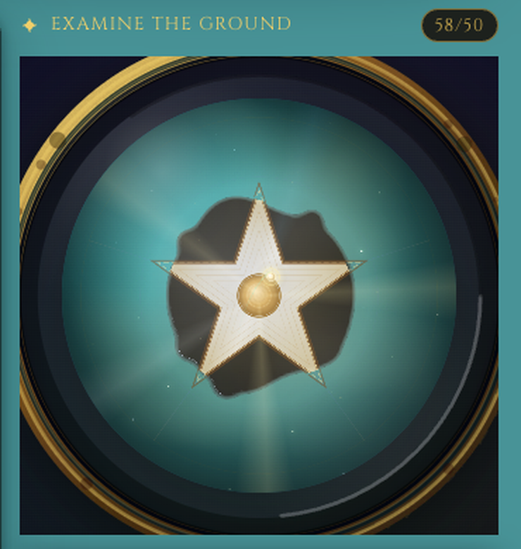
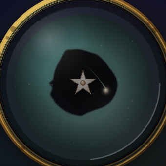
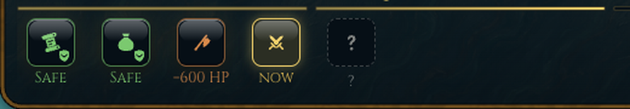
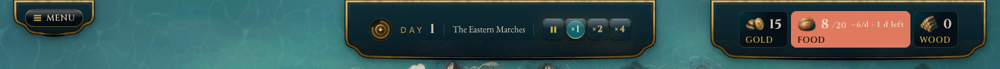

SC-2 · Idle dopo il verdetto A CONFERMATA · FORMA DA SCEGLIERE
La versione a «tre raggi» non va. Due direzioni nuove, entrambe ricavate dal vocabolario dell'astrolabio, non da effetti generici. Principi dalla ricerca: il moto dopo l'esito deve essere calmo e lungo (il centro dell'attenzione è la carta dell'esito); loop lunghi e sfasati per non sembrare meccanici; solo trasformazioni e opacità (nessun ridisegno del canvas, BV-04 ridefinito); reduced-motion = fermo. Entrambe hanno una variante per la sconfitta, che oggi non ha messa in scena.
Baseline


A1 · Orrery: gli anelli continuano a girare
A2 · Marea d'inchiostro
| Asse | A1 Orrery | A2 Marea |
|---|---|---|
| Coerenza con l'oggetto «astrolabio» | meccanica, strumentale | narrativa, magica |
| Continuità con l'intro | nuova | stessa materia (inchiostro) |
| Distinzione vittoria/sconfitta | sottile (velocità, temperatura) | forte (scintille contro cenere) |
| Rischio di distrarre dalla carta | basso | medio (particelle) |
QW-1 · Le icone sotto la barra BARRA B CONFERMATA
La tua nota: «le icone in basso non stanno bene, sono fuori stile». Oggi sono la cronologia delle fasi: tessere con bordo verde, scudi con la spunta, «SAFE» verde, «−600 HP» arancio (cifra sbagliata, vedi F3), tessera tratteggiata «?». È tutto quello che la regola 6b vieta: semaforo, spunte, badge. Due direzioni nella famiglia della HUD (ottone, lacca, inchiostro; il ferro per ciò che è chiuso; la brace per il danno).
Baseline

I1 · Sigilli sulla barra
I2 · Tessere d'ottone sotto la barra
| Asse | I1 Sigilli | I2 Tessere |
|---|---|---|
| Legame fasi ↔ tempo (la tua richiesta R-231 #4) | diretto: la fase sta dove avviene | indiretto |
| Target interattivo (≥ 32 px) | 26 px, serve area di tocco estesa | 40 px |
| Altezza della finestra | −1 riga | invariata |
| Fasi nascoste / sforo | il sigillo appare quando la fase si rivela | nessun problema di posizione |
HUD-2 · Le tre lastre in alto NUOVO
Il problema che non avevo visto (FATTO): la lastra MENU è alta 50 px contro 84 delle altre due; la pillola «MENU» riempie quasi tutta la lastra e passa sopra la cornice dorata e le spalle curve. Il tempo ha spazio vuoto, le risorse hanno tessere di larghezza diversa. Tre oggetti che non sembrano della stessa famiglia.

H1 · Tre lastre, una famiglia
H2 · Due lastre: il MENU entra nel tempo
| Asse | H1 | H2 |
|---|---|---|
| Simmetria / equilibrio della fascia | tre pesi in fila | due pesi asimmetrici |
| Scoperta del menu | etichetta «MENU» | solo icona + tooltip |
| Copertura della mappa | invariata | −1 lastra |
| Costo (insets T-01, test geometria) | basso | medio |